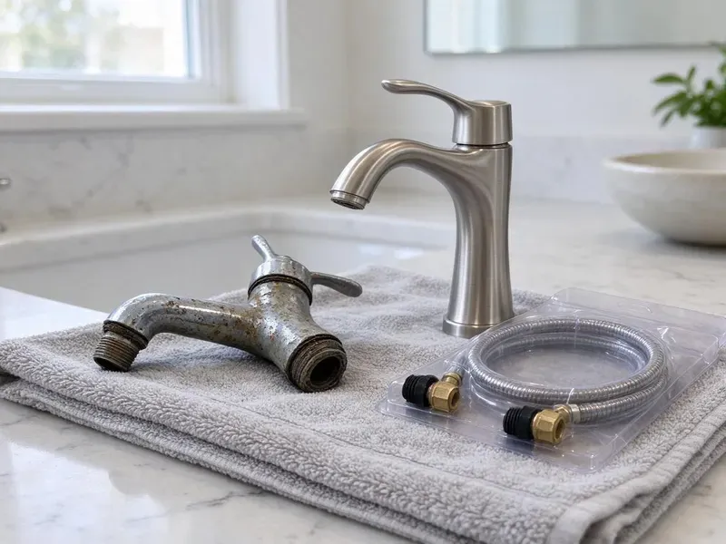

Sewer Replacement in Utica, NY
For reliable sewer replacement throughout Utica, NY, trust the experienced plumbers at HCL Plumbing. We handle everything from inspection to full system replacement.
- Fast, Local Service
- Expert New York Plumbers
- Guaranteed Work
- Licensed Plumbers

Professional Sewer Replacement Services You Can Trust in Utica, NY.
We show you the camera footage so you can see the damage for yourself.
Reliable Sewer Replacement Services for Utica, NY Properties
From initial camera inspection to the final trench backfill, HCL Plumbing handles every part of your sewer replacement project in Utica, NY. We are equipped to replace old, failing sewer lines that are prone to collapses, leaks, or repeated blockages, restoring proper drainage to your property.
Our expertise includes:
- Diagnose and replace all types of sewer line damage.
- Video sewer inspections with locating to pinpoint breaks and bellies
- Install durable PVC, ABS, and cast iron sewer pipes.

Additional Plumbing Replacement Services in Utica, NY
When repairs are no longer enough, our replacement services in Utica, NY deliver modern, efficient equipment installed right.


Customers
Why Choose HCL Plumbing for Sewer Replacement in Utica, NY?
Paying for drain cleaning every few months only treats the symptom of a cracked or bellied line. Replacing the sewer line ends repeated cleaning costs and protects your home from sewage backups.
- Code Compliant, We install proper slope, cleanouts and connections to code.
- Quality Materials, We use only high-grade, corrosion-resistant pipes and fittings designed for long-term durability in New York climate.
- Permit Compliance, Sewer replacement often requires permits. We manage all necessary permits to ensure your project in Utica meets local building codes and regulations.
Citywide Coverage
HCL Plumbing proudly serves every neighborhood in Utica, ensuring that no matter where you are located, expert sewer replacement services are just a call away.
Experienced Team
Each member of the HCL Plumbing team is trained in the latest sewer line technologies and safety protocols, delivering a professional and reliable replacement in Utica.
Safety-First Approach
Safety is a top priority in all our sewer replacement projects, both for our team and your property. We adhere strictly to all OSHA guidelines and local Utica building codes throughout the entire process, from digging to backfilling.
Trusted Certified Utica Plumbing Services Professionals
At HCL Plumbing, we take pride in providing certified plumbing services throughout Utica, NY. Backed by recognized industry credentials, our experienced plumbers combine technical skill with genuine customer care. Whether it is repair, installation, or maintenance, we follow strict safety and quality standards to deliver long-lasting results you can trust.
Call Us Now PHCC Plumbing Contractor Recognition
PHCC Plumbing Contractor Recognition Better Business Bureau (BBB) Accreditation
Better Business Bureau (BBB) Accreditation Angi Certified Pro
Angi Certified Pro ISO 9001 Quality Management Certification
ISO 9001 Quality Management CertificationLong-Term Sewer Replacement Services in Utica, NY
Commercial Sewer Replacement in Utica
Commercial buildings often have larger sewer lines and grease issues. We replace commercial laterals and coordinate with businesses to reduce downtime. We may install grease interceptors as needed. We handle permits and city coordination. Our crews work efficiently to restore service.

Residential Sewer Replacement in Utica, NY
HCL Plumbing specializes in residential sewer replacement, understanding the specific needs and infrastructure of homes across Utica. Whether you're dealing with a failing main line, collapsed pipes from shifting soil, or frequent backups due to aging infrastructure, we provide tailored solutions that ensure your home's plumbing system functions reliably for years to come.
Trenchless Sewer Repair Options in Utica, NY
Where applicable, we offer trenchless sewer repair methods like pipe bursting. This technique involves pulling a new pipe through the old one, simultaneously breaking the existing pipe apart. It's a less disruptive option that requires only two small access points, saving your landscaping and driveway from extensive excavation. Trenchless methods are ideal for certain types of pipe damage and property layouts in Utica.
Code-Compliant Sewer Replacement in Utica
All sewer replacement work performed by HCL Plumbing in Utica closely adheres to local plumbing codes and regulations. This includes proper pipe sizing, depth, slope, and connection methods. Obtaining the necessary permits and ensuring inspections are passed is a critical part of our process. We handle all the paperwork and coordination, ensuring your new sewer line is not only functional but also fully compliant with all municipal requirements, preventing future issues or penalties.
Addressing Tree Root Intrusions in Utica, NY
Tree roots are a common cause of sewer line damage, especially with older, more porous pipe materials like clay or cast iron. Roots can penetrate tiny cracks, grow inside the pipe, and eventually cause blockages or even burst the line. Our sewer replacement services specifically address root-damaged pipes, often recommending more resistant materials like PVC or ABS to prevent future intrusions. We also advise on tree placement to protect your new sewer system.
Sewer Line Repair vs. Full Replacement in Utica
Deciding between repair and full replacement depends on the extent and nature of the damage. Minor cracks or isolated clogs might be resolved with spot repairs, but widespread corrosion, multiple breaks, or a collapsed pipe often necessitates a full replacement. Our technicians in Utica will conduct a thorough camera inspection to accurately diagnose the problem and recommend the most cost-effective and long-term solution. We provide clear explanations and upfront pricing for both options.
Traditional Trench Sewer Replacement in Utica
For severely damaged or collapsed sewer lines, traditional trenching is often the most reliable solution. This involves excavating a trench along the sewer line's path to allow for direct access and replacement of the entire pipe. While more invasive, it provides a complete overhaul and is often necessary for older homes with clay or cast iron pipes that have reached the end of their lifespan. We ensure careful planning and execution to minimize disruption to your yard.

Clay and Orangeburg Pipe Replacement in Utica, NY
Clay pipe joints let roots in, while Orangeburg pipe made from tar paper deforms over time. Both are prone to failure. We replace these lines with modern materials. Camera inspection shows the full extent of damage. Replacement ends recurring root problems.
Sewer Replacement Near Me in Utica, NY
Local crews understand soil conditions and city requirements in your area. We plan replacements to limit disruption. Call us for a camera inspection and clear quote.
Our team is always close by, ready to dispatch to your location in Utica for a complete assessment of your sewer line issues. We pride ourselves on quick response times and effective solutions, ensuring that your sewer replacement project is handled efficiently and professionally from start to finish.
HCL Plumbing at a Glance
- Fully licensed plumbing team covering Utica, NY
- Same-day appointments and 24/7 emergency response
- Upfront, flat-rate pricing before work begins
- 4.8-star rated by 520+ New York customers
Utica Map
Utica Information
- Population
- 63,607
- Area codes
- 315/585/607
- Service area
- Utica and communities within 40 miles
- Nearby
- Syracuse, Schenectady, Saratoga Springs, Binghamton
Effective sewer replacement is critical for homes in Utica, NY, because ground movement can put steady stress on underground pipes and mature tree roots often seek out water in older, deteriorating sewer lines.
Expert Services
Trust our professionals for reliable HCL Plumbing solutions in Utica, NY.
Our Specialized Plumbing Services in Utica, NY
At HCL Plumbing, we provide a complete range of plumbing services across Utica, NY. From leak detection to full system installations, our team ensures fast, precise, and affordable service for both residential and commercial properties. Explore our core services below:


How Our Sewer Replacement Process Works in Utica, NY
Here is how we replace your sewer line.
Request a Quote
Start by calling (716) 396-7101 to schedule a consultation. We'll discuss your concerns and set up a good time for an on-site evaluation of your sewer system.
Diagnosis & Plan
Our technicians will perform a detailed sewer camera inspection to accurately diagnose the problem. We then present you with a clear plan and upfront pricing for the replacement.
Permit & Prep
Once you approve the plan, we handle all necessary permits with Utica authorities. Our team then prepares the site, ensuring safety and guarding your property.
Frequently Asked Questions About Sewer Replacement in Utica
Sewer line replacement costs in Utica, NY can range significantly, typically from $4,000 to $25,000 or more, depending on factors like the length of the line, depth, pipe material, chosen method (traditional vs. trenchless), and excavation complexity. A full diagnosis is required for an accurate estimate. We provide clear, transparent pricing after a thorough inspection.
Trenchless replacements often take one day. Open-trench jobs can take two to four days.
Frequent backups, slow drains throughout the house, sewage odors and soggy yard areas are common signs. Camera inspection verifies the problem.
Tree roots are a leading cause of sewer line damage. Frost reaches deep into the ground here, so water service lines must be buried well below the surface to avoid freezing. Shifting soil can crack pipes, and tree roots, attracted to the moisture and nutrients, will infiltrate these cracks, growing inside the pipe and causing severe blockages and even collapses.
Key signs include frequent backups or clogs in multiple drains, gurgling noises from toilets, sewage odors in your yard or basement, unusually lush or wet spots in your lawn, and sudden dips or sinkholes in your yard. A sewer camera inspection can confirm the exact issue.
Modern PVC and HDPE pipes have tight joints that resist roots. Proper installation significantly reduces risk.
Sewer replacement requires excavation, permits and precise slope. It is best left by professionals.
Frequent sewage backups, multiple clogged drains, foul odors coming from drains or your yard, lush green patches in your lawn, indentations in your yard, or the sound of running water when no fixtures are in use are all strong indicators of a failing sewer line. Persistent problems often point to the need for replacement rather than just repairs.
What People Are Saying About Our Plumbing Experts?

Patricia H.
We had a slab leak that two other companies could not find. HCL Plumbing located it in under an hour, explained our options, and the price matched the quote to the dollar.
Slab Leak Repair · Saratoga Springs, NY
Daniel K.
A pipe burst at 11 pm and they actually answered. The plumber showed up within the hour, shut everything down, and had us back to normal the next morning. Could not ask for more.
Emergency Plumbing · Saratoga Springs, NY
Sofia M.
Two new toilets installed in one visit, no mess left behind, and the tech even adjusted a faucet he noticed was dripping. Fair pricing and really friendly.
Toilet Installation · Syracuse, NYLaura S.
I scheduled a water heater replacement, and the team made the process smooth and affordable. The new unit works perfectly, and they cleaned up after completing the job.
Water Heater Replacement · Glens Falls, NY
Emily R.
I called HCL Plumbing for plumbing repair, and the technician was fast, polite, and thorough. They explained the problem clearly and fixed it the same day. I will definitely hire them again. Highly recommended!
Plumbing Repair · Saratoga Springs, NY
Robert G.
The trenchless sewer replacement saved our front yard. They walked us through the camera inspection footage first so we knew exactly what we were paying for.
Sewer Line Replacement · Binghamton, NY